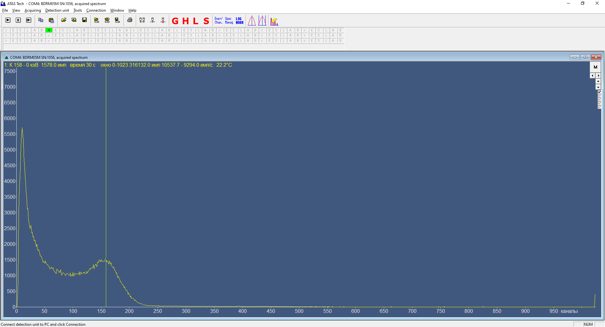

↑
БДРМ-05М и БДРМ-11. Настройка
- 1. В перечень записать дату настройки, серийный номер и ФИО регулировщика, наклеить на прибор наклейку с номером.
- 2. При необходимости внести нести изменения в схему:
- Установить параллельно С47 конденсатор 0,47 мкФ;
- Выпаять R24, С10;
- Заменить R35 и R38 на 1 кОм, R26 - 4,7 кОм, R32 - 51 кОм, R3 – 0 Ом, R5 – 9,1 кОм, С14 - 15 пФ;
- 3. Записать внутренние номера и дату:
- Подключить БД к ПК через необходимый адаптер.
- Запустить программу ATAS или ATAS TECH. БД должен подключится автоматически.
- Записать серийный номер, месяц и год производства в меню Блок детектирования → Свойства.
- 4. Проверить версию прошивки, при необходимости перепрошить.
- 5. Выбрать Блок детектирования → Параметры стабилизации.
- Установить дискриминаторы 0, 15, 2, 2 подтвердить установку.
- Выключить светодиод (нажать LED OFF).
- Установить пороги: Выбрать Блок детектирования — Пороги: нижний порог 1050, верхний 850.
- 6. Выставить высокое: Выбрать Блок детектирования — Высокое 12000.
Проверить высокое на C49. Значение высокого должно быть около 95-96В. При необходимости скорректировать высокое с помощью R44, R46.
- 7. Установить на отметку блока детектирования 137Cs.
- 8. Настроить пик в 150 канал по 137Cs с активностью 105 Бк подстройкой R27, R31.

- 9. Установить на отметку блока детектирования 228Th.
Выставить 750 канал ±30 каналов R33, R34. Необходимо контролировать положение 137Cs
- 10. Поставить на приработку.
- 11. Снять чувствительности на УДГ-АТ110 на расстоянии 2800мм. При необходимости скорректировать чувствительность по 241Am нижним порогом.
| Чувствительность блока детектирования должна быть |
| 137Cs |
≈32500 |
≈66000 |
| 241Am |
≈66000 |
≈115000 |
| 60Co |
≈17000 |
≈36000 |
- 12. Провести термо-калибровку и построить температурную зависимость.
- 13. При поставке блока детектирования в составе МКС-АТ6103, МКС-АТ6110 или УРК передать на участок радиометрии для проведения калибровки по энергии и сигме.
Зашить окна для алгоритма категоризации с помощью ПО SDL.
- 14. Для поставки блока детектирования в составе СРК-АТ2327 или МРП-АТ930 установить скорость обмена 19200.